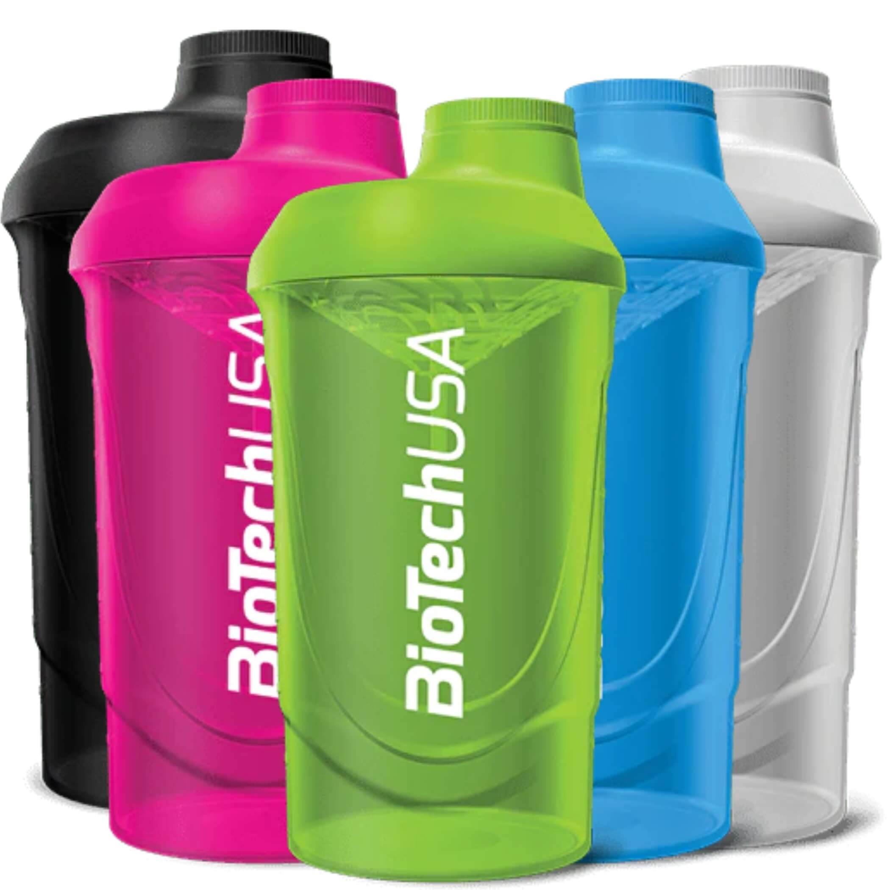

En stockBioTechUSA Wave Shaker
Description
7,00 €
Le Wave Shaker BioTechUSA est conçu pour mélanger efficacement vos protéines, gainers, BCAA et autres compléments sans laisser de grumeaux. Sa grille de mélange intégrée assure une texture homogène en quelques secondes.
Robuste, léger et facile à transporter, il vous accompagne aussi bien à la salle de sport qu'au quotidien.
- Contenance de 600 ml.
- Grille anti-grumeaux intégrée.
- Graduation facile à lire.
- Fermeture hermétique.
- Sans BPA.
- Disponible en (noir,rose,vert).
A savoir
Utilisation suggérée
Ajouter le liquide puis votre complément alimentaire, refermer le shaker et agiter quelques secondes avant consommation.